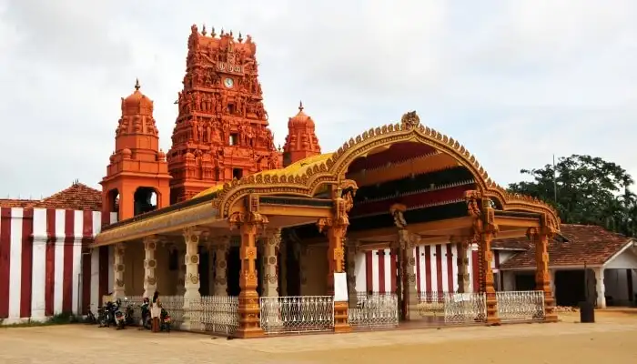
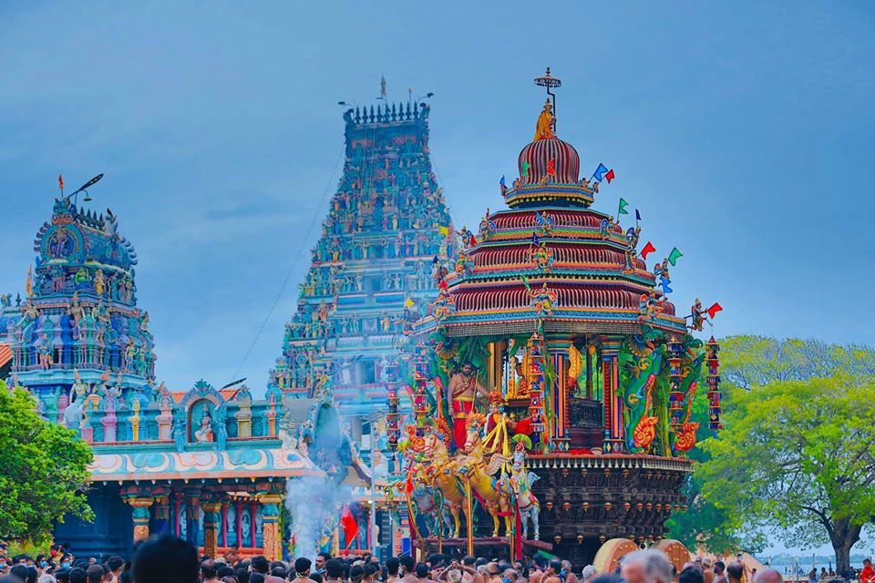
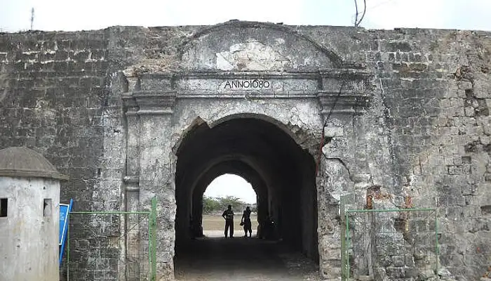
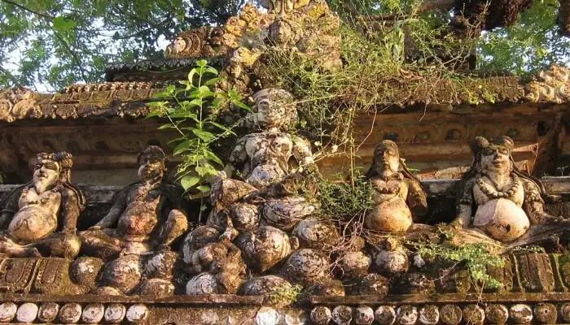
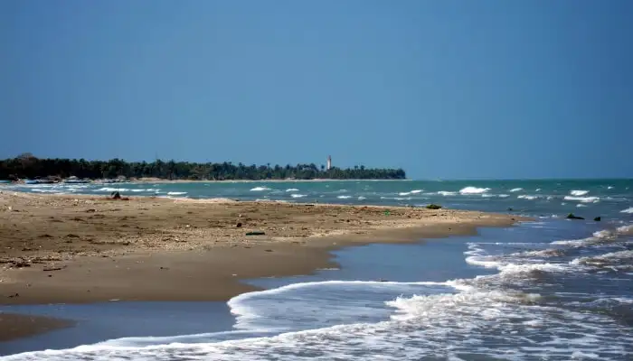
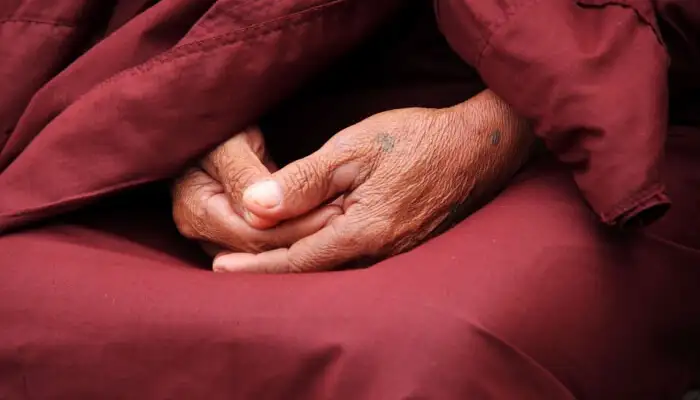
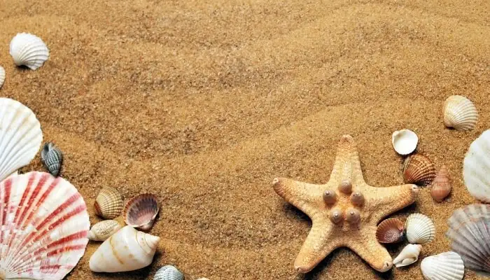

Jaffna is one of the most beautiful towns located right on the northern tip of Sri Lanka. Jaffna is known for its
predominant Tamil population and recognized as the cultural capital for Tamilians in Sri Lanka. The hospitality of the locals will
surely impress any tourist to this place. They are just not wonderful people but are friendly too. If you are looking for a destination
which offers beauty and great hospitality to travelers then Jaffna should be in your travel plan. But what should you see? Here are some
of the best places to visit in Jaffna.
1. Sangilean Thoopu
Among the important places to visit in Jaffna, this is definitely one. If you want to get the essence of the history of
Jaffna then the existence of this Royal Palace can never be ignored. In the Nellore District, you can still get the view of the
antique bathing pool and the remnant of the royal palace. You can definitely include this place among the top places to visit in
Jaffna. This place holds the memory of the last Tamil King who ruled the Yarlpana Kingdom successfully. After visiting the Nallur
Temple you can reach this place directly. From Jaffna town, you will get lots of private as well as public transport to reach this place.
2. Jaffna Library
Jaffna Library is considered as one of the most significant historical and important places to visit in Jaffna.
This library was opened in the year 1959. It was established by Alfred Duraiappah who was Mayor of Jaffna at that time. The
construction of this library was similar to the Indo-Saracenic style. A tragedy happened with this library and it was burnt
during the civil war in Jaffna in the year 1981. At this time this library was considered as the biggest library in Asia. It
possessed almost 97000 books and manuscript.
3. Nallur Temple

Pilgrims from all parts of the world visit Nallur Temple. The prime feature of this Nallur Temple is the golden arch
and the extended Gopuram. People visit here mainly to explore this Gopuram. The premise of this temple was built during the
eighteenth century. It was in the year 1620 when the Portuguese destroyed the old construction of this building which was
constructed during the regime of Tamil Kings. This temple is now considered as the primary place to hold any type of religious
festival.
4. Nainatheevu

This tourist place is famous for boat services. You can surely enjoy the boat ride and visit the island. This island
is located at a distance of 2 to 3 hours from the city Jaffna. The amount of time you need to visit depends on the availability
of boats to reach there. The main temple here was built by a wealthy foreign trader after receiving the blessings from the
Goddess Amba Devi. Unfortunately, this temple was destroyed by the Portuguese but it was rebuilt during the 18th century.
It was the year 1933 when the actual Gopuram was added to it.
5. Jaffna Fort

Among the top tourist places to visit in Jaffna Sri Lanka, Jaffna Fort is considered as one of the major ones.
This fort was established in the year 1618 by the people of Portuguese Origin during the Portuguese invasion in Jaffna.
This fort is positioned near the city of Karaiyur. This fort is also famous as Fortress of Our Lady of Miracles of Jaffna.
During the year 1658, this fort was conquered by the Dutch invaders and it was again in the year 1795 when this fort was
again taken back by the British. From the period 1986 to 1995 this fort was captured by LTTE and it was recaptured by the
Sri Lanka Army in the year 1995.
6. Kandarodei Temple
This is another amazing destination which should be included in the top places to visit in Jaffna town.
This is an ancient Buddhist place in Jaffna which is known for its historical events. This temple is near to Chunnakam
and from the Jaffna Town, the distance is only 8 km. The total area of the land is a - acre and the entire structure is
painted with ash-colored stone. There are 61 dagobas and some of them have only the foundation. This temple was founded
during the Anuradhapura Era and stone scriptures are still there which proves the rich ancient history of this temple.
7. Keerinalain or Naguleeswaram Temple

Keerinalain ranks among the top 10 places to visit in Jaffna, this temple is a must visit one. Travelers from
all parts of the world mainly arrive here to enjoy a bath in the natural water spring. It is saclass that all illness and
sickness will get cured after having a bath here. Lots of Hindu Pilgrims visit this temple to take blessings. This place
is located at 15 kms away from town and a perfect place to take a warm bath and rejuvenate your soul. The people having a
religious belief will find peace at this place.
8. Casuarina Beach

In Karainagar, Jaffna District Sri Lanka you will find Casuarina Beach which is one of the most attractive places
to visit in Jaffna Peninsula. You need to drive almost 20 kilometers from Jaffna to reach this beach and it is also known as
Casuarina. The main attraction of this beach is white sand. This beach has been named after the Casoorina Trees which are
available all through the beach. If you want to walk around the entire beach then it will take 45 minutes to travel to
explore one of the famous places to visit in Jaffna district.
9. Dambakola Patuna

If you're a true history buff then Dambakola Patuna will be your best place to head towards while in Sri Lanka.
This place is rich for its 2000 years history and it was the ancient port in Sri Lanka. To preach Buddhism, the daughter
of King Ashoka, Sanghamitta arrived at this port. She brought the holy sapling of Bodhi tree which was planted by Sri Lankans
King Devanampiyatissa. At present this tree is considered as the oldest tree in the world which was planted by a human being
10. Charty Beach

Located 23 km north of Jaffna town in Allaippiddy, this is a very clean beach and a great place to visit
in Jaffna on your trip to Sri Lanka. You can chill here with your family or friends, take a peaceful walk along the
shore, or even finish reading your old book. Needless to say, this is a great place to visit in the town for some blisful moments.